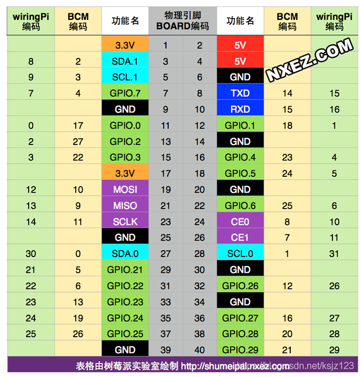
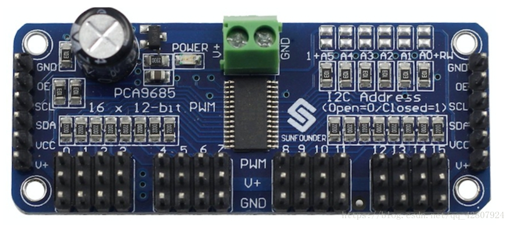
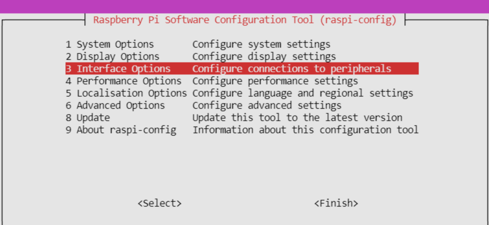
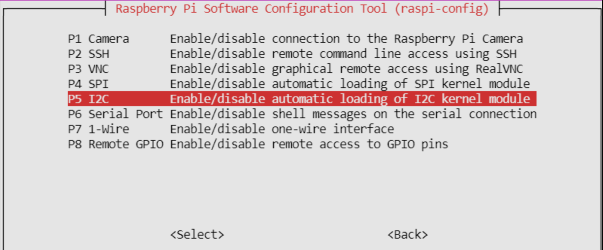

树莓派通过PCA9685模块控制舵机
原因
我们使用树莓派制作机器人或者小车时，经常遇见需要控制大量舵机的需求，树莓派4B只有GPIO1引脚可以通过硬件方式输出PWM波，其余的引脚只有通过软件的方式才可以实现PWM波输出。

为了实现大量舵机的精准控制，可以使用PCA9685模块进行控制。
PCA9685介绍

详细介绍可以参考知乎上别人写的一篇文章PCA9685：I2C转16路PWM，助力你的系统 - 知乎 (zhihu.com)
可能有一些PCA9685板在外形上有一些不同，其本质近乎相同。
这边有一些注意点：
以上图为例，左右两侧为通讯和供电接口，在使用的时候只需要连接任意一边即可。
中间上方的绿色端子为舵机单独供电接口，V+为正极，GND为舵机负极，这里的供电端子在左右两边也有接口，根据需求进行使用。
V+端子建议为6V供电，为了防止误接高电压，板载了一颗10V电容，就是左上角的黑色电容。
左上角的黑色电容规格为10V 1000uF ，有一些店家不会板载这一颗电容，需要自行购买。
板载供电与舵机供电是完全分开的，需要注意
下方的3*16的路为舵机输出，舵机使用V+供电，PWM为信号输出接口。
实操
打开树莓派的IIC通信
树莓派在安装操作系统之后默认不开启IIC通信，此时树莓派上的IIC引脚暂时无法直接使用，通过sudo raspi-config命令将IIC通信功能开启。


之后选择Back退出，目前在最新的树莓派系统中似乎不再强制重启进行生效，建议手动进行重启保证接口改变的生效。
安装Python控制包
在终端输入pip install Adafruit_PCA9685，我提前将pip源换成了清华源，对于国内的用户要友好很多，过程如下：
1
2
3
4
5
6
7
8
9
10
11
12
13
14
15
16
17
18
19
20
21
22
23
24
25
26
27
28
29
| ❯ sudo pip install Adafruit_PCA9685
Looking in indexes: https://pypi.tuna.tsinghua.edu.cn/simple
Collecting Adafruit_PCA9685
Downloading https://pypi.tuna.tsinghua.edu.cn/packages/f6/33/ea998d02bab6f51c43ed99e3345ff7642aa0ceac871aff8cb8850f0dde05/Adafruit_PCA9685-1.0.1.tar.gz (3.0 kB)
Preparing metadata (setup.py) ... done
Collecting Adafruit-GPIO>=0.6.5 (from Adafruit_PCA9685)
Downloading https://pypi.tuna.tsinghua.edu.cn/packages/db/1c/2dc8a674514219f287fa344e44cadfd77b3e2878d6ff602a8c2149b50dd8/Adafruit_GPIO-1.0.3.tar.gz (24 kB)
Preparing metadata (setup.py) ... done
Collecting adafruit-pureio (from Adafruit-GPIO>=0.6.5->Adafruit_PCA9685)
Downloading https://pypi.tuna.tsinghua.edu.cn/packages/19/9d/28e9d12f36e13c5f2acba3098187b0e931290ecd1d8df924391b5ad2db19/Adafruit_PureIO-1.1.11-py3-none-any.whl (10 kB)
Collecting spidev (from Adafruit-GPIO>=0.6.5->Adafruit_PCA9685)
Downloading https://pypi.tuna.tsinghua.edu.cn/packages/c7/d9/401c0a7be089e02826cf2c201f489876b601f15be100fe391ef9c2faed83/spidev-3.6.tar.gz (11 kB)
Installing build dependencies ... done
Getting requirements to build wheel ... done
Installing backend dependencies ... done
Preparing metadata (pyproject.toml) ... done
Building wheels for collected packages: Adafruit_PCA9685, Adafruit-GPIO, spidev
Building wheel for Adafruit_PCA9685 (setup.py) ... done
Created wheel for Adafruit_PCA9685: filename=Adafruit_PCA9685-1.0.1-py3-none-any.whl size=3754 sha256=b4033dd84fb944ba45506508bfe3f56f41c42e730c97eda304bc0b5afb20be01
Stored in directory: /home/xiaolaji/.cache/pip/wheels/f6/57/b8/918bc2d69ff2048d441d6b0d5bda5dd9ad959b1d2c5b48481f
Building wheel for Adafruit-GPIO (setup.py) ... done
Created wheel for Adafruit-GPIO: filename=Adafruit_GPIO-1.0.3-py3-none-any.whl size=38124 sha256=31d1147378f399fbf18d3c6aeae05fd670ef34a273ab747ef71e482b899ed870
Stored in directory: /home/xiaolaji/.cache/pip/wheels/67/6e/ec/cb7ec763a7f3a6daf3cc544d4cf4bef6dd79c38be99ef7de45
Building wheel for spidev (pyproject.toml) ... done
Created wheel for spidev: filename=spidev-3.6-cp38-cp38-linux_x86_64.whl size=41334 sha256=75453493592c76e9fc891ad5036fb314eec296d998ea4af989504d3f1e7a8627
Stored in directory: /home/xiaolaji/.cache/pip/wheels/7e/2e/8e/2e65bfcd39d1de3b550ac7ba444a5de1c1972b1d2b976f2444
Successfully built Adafruit_PCA9685 Adafruit-GPIO spidev
Installing collected packages: spidev, adafruit-pureio, Adafruit-GPIO, Adafruit_PCA9685
Successfully installed Adafruit-GPIO-1.0.3 Adafruit_PCA9685-1.0.1 adafruit-pureio-1.1.11 spidev-3.6
|
在程序中引用
1
2
3
4
5
6
7
8
9
10
11
12
13
14
| import Adafruit_PCA9685
pwm = Adafruit_PCA9685.PCA9685()
pwm.set_pwm_freq(50)
channel = 0
set_servo_angle(channel,90)
def set_servo_angle(channel, angle):
date = int(4096 * ((angle * 11) + 500) / 20000)
pwm.set_pwm(channel, 0, date)
|
以上就是在程序中的使用，如有欠妥之处，请帮忙指出:smile